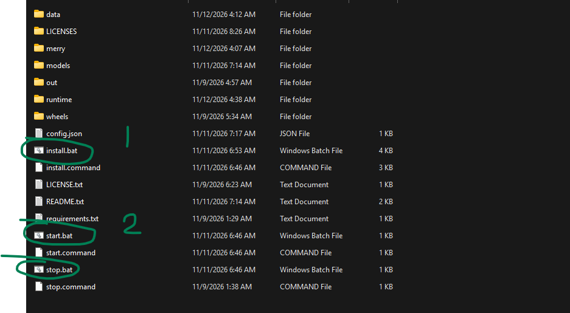
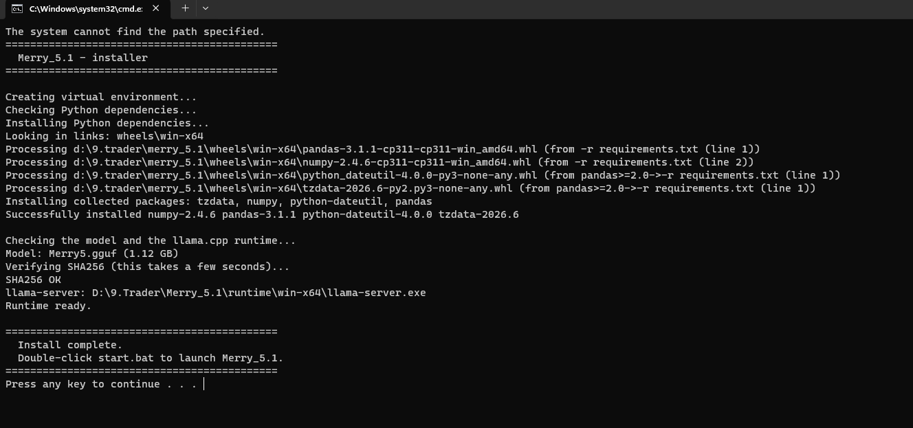
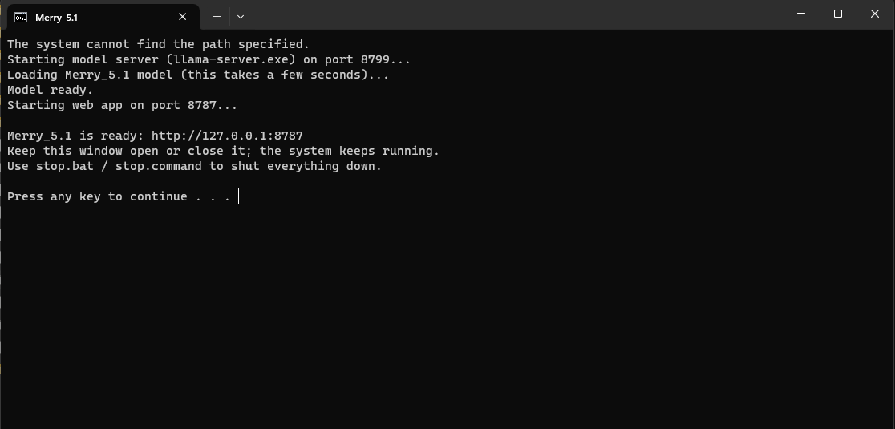
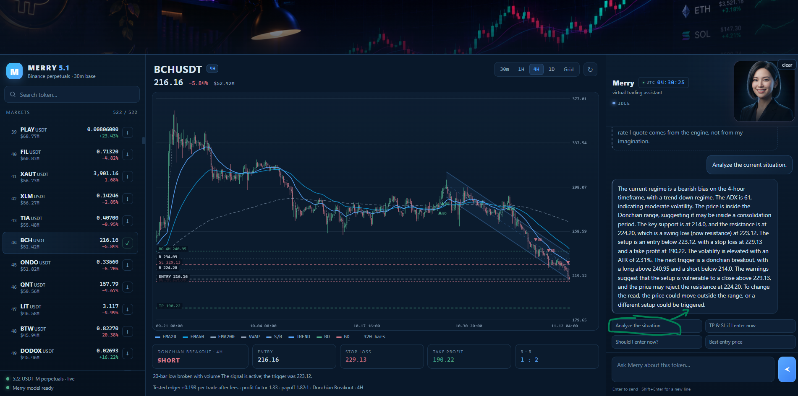
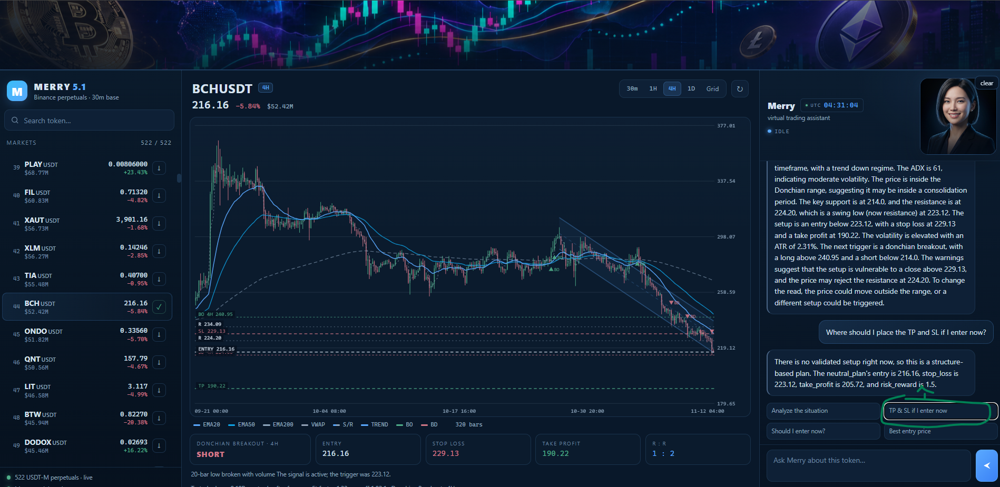
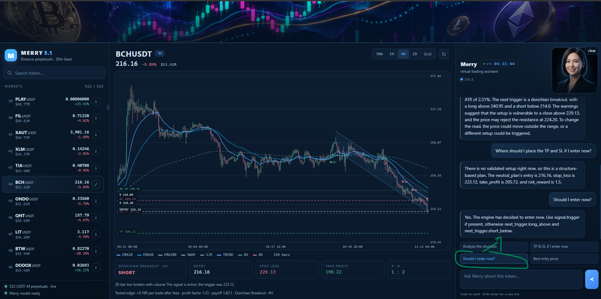
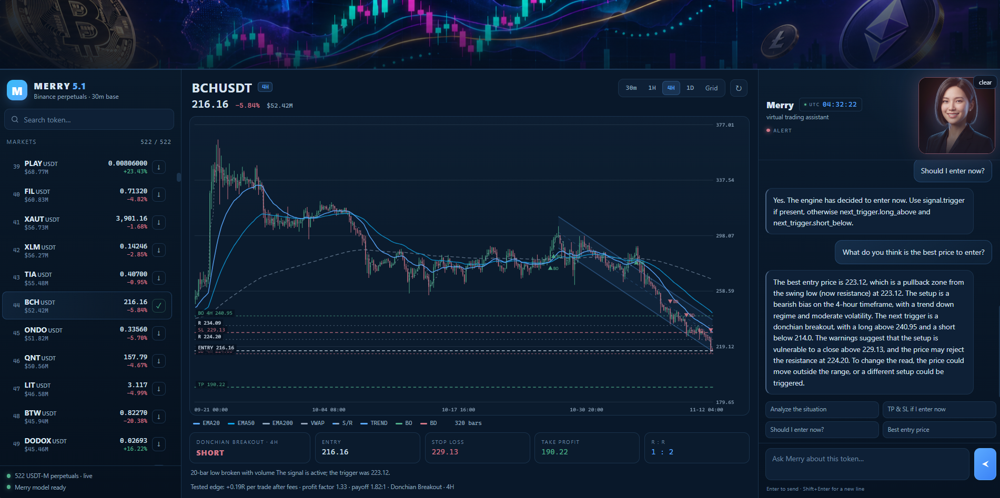

01
Windows or macOS
Use the .bat files on Windows and the .command files on macOS. Keep the extracted folder in a place you can find.
v5.1 Usage
A simple, click-by-click setup for beginners. No coding, no terminal commands — just the files in the package and two double-clicks.
Step 1 — Download
Download Merry_5.1.rar from the button above. It is 1.47 GB, so give it a few minutes on a slower connection.
Save it anywhere you can easily find — for example, your Downloads folder.
Downloaded archive
Merry_5.1.rar 1.47 GB · RAR archive · Windows and macOSStep 2 — Unzip
Right-click the RAR file and choose Extract All (Windows), or double-click it (macOS).
Keep the folder structure intact. You will see files including install.bat, start.bat, and stop.bat — or the .command versions on macOS.

Step 3 — Install
Double-click install.bat on Windows, or install.command on macOS.
A console window opens. It creates a virtual environment inside the package folder, installs the dependencies, and verifies the model checksum. Wait for the line:
“Install complete.”
This can take a few minutes. If you see a harmless path warning before it starts, let it continue until “Install complete” appears.

Step 4 — Start
Double-click start.bat (Windows) or start.command (macOS).
The console starts the local model server and the web app, then shows:
Merry_5.1 is ready: http://127.0.0.1:8787
Keep this window open or minimized. It is the engine running on your computer.

Step 5 — Choose a market
Your browser opens automatically. If it does not, go to http://127.0.0.1:8787.
Merry automatically loads the token list from Binance — currently 522 USDT-M perpetual markets. Search for a token, select it, and download its candles.
Wait for the download to finish. Merry then has enough historical data to analyze the chart.

Step 6 — Ask Merry
Merry Assistant is ready on the right. Use one of the four guided questions, or type your own into the chat box.
The assistant answers with structure, bias, entry, stop loss, take profit, risk-to-reward, and the levels that would invalidate the idea — or tells you there is no valid setup.




stop.bat (Windows) or stop.command (macOS). It forcibly terminates the system and frees the ports. Merry 5.1 provides analysis only; it does not place trades for you.
Before you start
Use the .bat files on Windows and the .command files on macOS. Keep the extracted folder in a place you can find.
The package is 1.47 GB and includes a 1.12 GB model. Make sure you have room to extract it, and an internet connection for Binance data.
The interface runs locally at 127.0.0.1. There is no sign-up and no cloud dashboard to configure.
FAQ
No. Merry 5.1 provides AI-powered chart analysis and trading signals. You place every trade yourself. Merry 5.2 adds automated execution for select clients.
A few minutes, depending on your computer and internet connection. The installer creates the environment, installs the Python dependencies, and verifies the model checksum. Wait for “Install complete.”
The UI loads the token list from Binance automatically. At the time of release, it shows 522 USDT-M perpetual markets.
They ask the assistant to analyze the current situation, plan take-profit and stop-loss levels, decide whether the setup is valid now, or find the best entry price. You can also type any question into the chat.
A harmless warning can appear at the start of installation. As long as the process continues and ends with “Install complete,” the environment is ready.
Run stop.bat on Windows or stop.command on macOS. It forcibly terminates the model server and the web app.
Ready?
1.47 GB · Free public edition · Windows and macOS